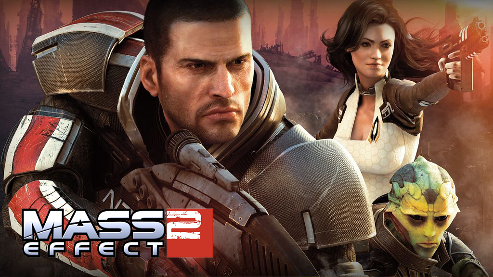

Mass Effect 2
- Developpeur: Bioware
- Éditeur: Electronic Arts
- Plateformes: XBOX 360, PlayStation 3, Windows
- Moteur: Unreal Engine
Petite description
Mass Effect 2 est le deuxième jeu dans la série Mass Effect, il continue l'histoire du commandant Shepard et de l'équipage du Normandy. Voyagez vers plusieurs nébuleuses et planètes pour découvrir le secret du relais Omega 4 et des Moissoneurs. Un super jeu de role qui comprend de super personnages et une narative géniale.